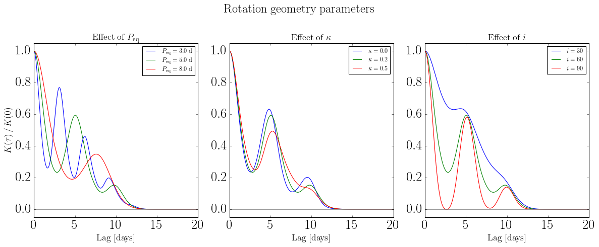
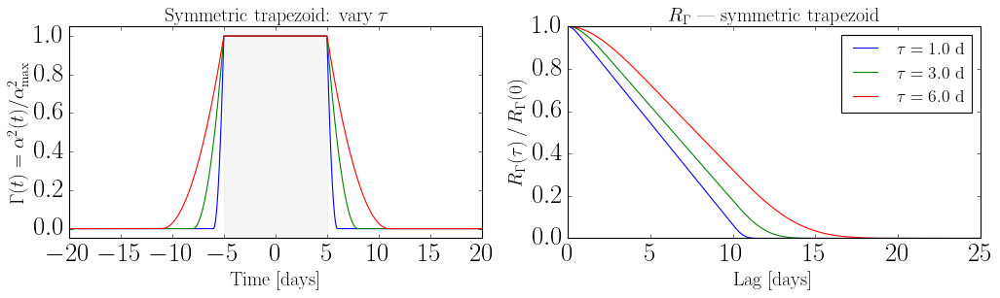
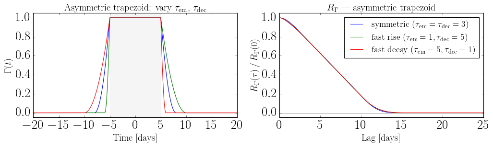
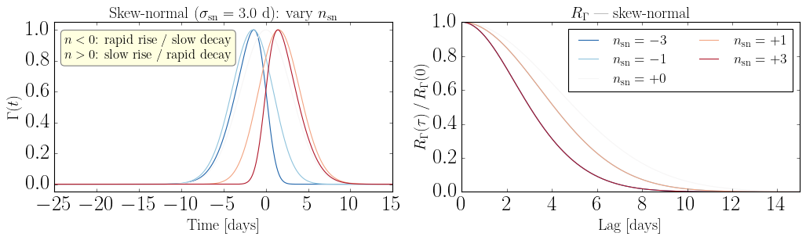
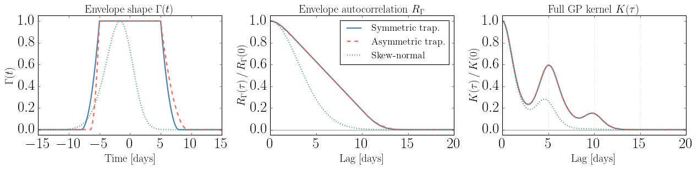
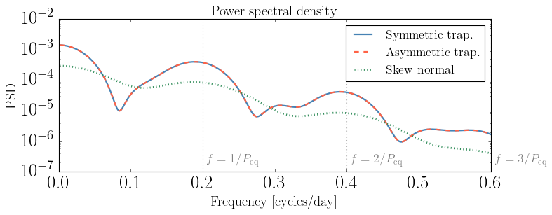
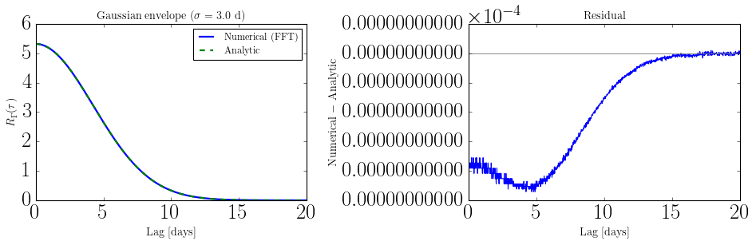

Understanding the Hyperparameters#
Every AnalyticKernel and GPSolver instance is configured with a single Python dict called hparam. This notebook explains what each key controls, which keys are required, and which keys are specific to each envelope model.
The kernel formula#
The GP kernel is
averaged over spot latitude \(\phi\), where
Symbol |
Meaning |
|---|---|
\(\sigma_k\) |
overall kernel amplitude |
\(R_\Gamma(\tau) = \int \Gamma(t)\,\Gamma(t+\tau)\,dt\) |
autocorrelation of the squared spot envelope \(\Gamma(t) = \alpha^2(t)/\alpha_{\rm max}^2\) |
\(c_n(\phi)\) |
Fourier coefficients of the spot visibility function at latitude \(\phi\) |
\(\omega_0(\phi) = 2\pi\,(1 - \kappa\sin^2\!\phi)\,/\,P_{\rm eq}\) |
latitude-dependent rotation frequency |
The hparam dict sets all of these quantities. Parameters split into three groups:
Rotation geometry — shape and period of the oscillations in \(K(\tau)\)
Amplitude — the overall scale \(\sigma_k\)
Envelope shape — the decay profile \(R_\Gamma(\tau)\)
[1]:
import sys
sys.path.append("../..")
import numpy as np
import matplotlib.pyplot as plt
import matplotlib.gridspec as gridspec
from scipy.special import erf
from src_jax.params import (
resolve_hparam,
BASE_REQUIRED_KEYS, KERNEL_HPARAM_KEYS, HPARAM_KEYS_WITH_NOISE,
)
from src_jax.analytic_kernel import AnalyticKernel, compute_R_Gamma_numerical, _skew_normal_envelope_func
# Reference hparam used throughout (symmetric trapezoid)
hparam_ref = dict(
peq=5.0, kappa=0.2, inc=np.pi / 3,
lspot=10.0, tau=3.0,
sigma_k=0.01,
)
resolve_hparam — validation and normalization#
Before any kernel or solver is built, the raw dict is passed through resolve_hparam, which:
Checks that the base required keys (
peq,kappa,inc,lspot) are present.Auto-detects the envelope type from the registered
EnvelopeSpectable (most-specific match wins) and injects derived keys such as a scalartau.Auto-detects the amplitude mode and injects
sigma_k.
The returned dict always contains tau and sigma_k, regardless of how they were specified in the input.
[2]:
# Provide amplitude as nspot_rate instead of sigma_k directly
raw = dict(peq=5.0, kappa=0.2, inc=np.pi/3, lspot=10.0, tau=3.0,
nspot_rate=0.4, fspot=0.0, alpha_max=0.05)
resolved = resolve_hparam(raw)
print("Input keys : ", sorted(raw.keys()))
print("Resolved keys:", sorted(resolved.keys()))
print(f"\nInjected sigma_k = {resolved['sigma_k']:.6f}")
print(f" = sqrt(nspot_rate) * (1-fspot) * alpha_max^2")
print(f" = sqrt({raw['nspot_rate']}) * {1-raw['fspot']} * {raw['alpha_max']}^2")
print(f" = {np.sqrt(raw['nspot_rate']) * (1-raw['fspot']) * raw['alpha_max']**2:.6f}")
Input keys : ['alpha_max', 'fspot', 'inc', 'kappa', 'lspot', 'nspot_rate', 'peq', 'tau']
Resolved keys: ['alpha_max', 'fspot', 'inc', 'kappa', 'lspot', 'nspot_rate', 'peq', 'sigma_k', 'tau']
Injected sigma_k = 0.001581
= sqrt(nspot_rate) * (1-fspot) * alpha_max^2
= sqrt(0.4) * 1.0 * 0.05^2
= 0.001581
1 — Rotation geometry parameters#
These four keys appear in every hparam dict regardless of which envelope is used.
Key |
Description |
Units |
Effect on kernel |
|---|---|---|---|
|
Equatorial rotation period |
days |
Sets the spacing of the oscillation peaks: \(K(\tau)\) peaks at integer multiples of \(P_{\rm eq}\) |
|
Differential rotation shear \(\kappa\) |
dimensionless \(\in(0,1)\) |
Broadens each peak; spots at different latitudes rotate at different rates \(\omega_0(\phi) = (2\pi/P_{\rm eq})(1-\kappa\sin^2\!\phi)\) |
|
Stellar inclination \(i\) |
radians \(\in(0,\pi)\) |
Controls harmonic amplitudes \(|c_n|^2\); equatorial view (\(i=\pi/2\)) maximises the first harmonic; pole-on (\(i\approx 0\)) suppresses all modulation |
|
Spot plateau duration |
days |
Duration of the flat-top phase of the trapezoidal envelope; not used by the skew-normal envelope (set to |
[6]:
lags = np.linspace(0, 40, 800)
fig, axes = plt.subplots(1, 3, figsize=(15, 6), sharey=False)
# --- vary peq ---
ax = axes[0]
for peq in [3.0, 5.0, 8.0]:
h = dict(hparam_ref, peq=peq)
k = AnalyticKernel(h, n_harmonics=3)
K = k.kernel(lags)
ax.plot(lags, K / K[0], label=f"$P_{{\\rm eq}}={peq}$ d")
ax.set_xlabel("Lag [days]", fontsize=16)
ax.set_ylabel(r"$K(\tau)\,/\,K(0)$", fontsize=16)
ax.set_title("Effect of $P_{\\rm eq}$", fontsize=16)
ax.axhline(0, color="gray", lw=0.7)
ax.legend(fontsize=11)
# --- vary kappa ---
ax = axes[1]
for kappa in [0.0, 0.2, 0.5]:
h = dict(hparam_ref, kappa=kappa)
k = AnalyticKernel(h, n_harmonics=3)
K = k.kernel(lags)
ax.plot(lags, K / K[0], label=f"$\\kappa={kappa}$")
ax.set_xlabel("Lag [days]", fontsize=16)
ax.set_title("Effect of $\\kappa$", fontsize=16)
ax.axhline(0, color="gray", lw=0.7)
ax.legend(fontsize=11)
# --- vary inc ---
ax = axes[2]
for inc, label in [(np.pi/6, "$i=30°$"), (np.pi/3, "$i=60°$"), (np.pi/2, "$i=90°$")]:
h = dict(hparam_ref, inc=inc)
k = AnalyticKernel(h, n_harmonics=3)
K = k.kernel(lags)
ax.plot(lags, K / K[0], label=label)
ax.set_xlabel("Lag [days]", fontsize=16)
ax.set_title("Effect of $i$", fontsize=16)
ax.axhline(0, color="gray", lw=0.7)
ax.legend(fontsize=11)
for ax in axes:
ax.set_xlim(0, 20)
ax.set_ylim(-0.05, 1.05)
fig.suptitle("Rotation geometry parameters", fontsize=22, y=1.02)
plt.tight_layout()
plt.show()

2 — Amplitude parameterizations#
resolve_hparam accepts three mutually exclusive ways to set the kernel amplitude \(\sigma_k\). The most-specific matching set of keys wins (larger signature wins over smaller).
Mode |
Required keys |
Formula |
Notes |
|---|---|---|---|
Direct |
|
\(\sigma_k\) as provided |
Simplest; use when \(\sigma_k\) is already known |
Physical rate (preferred) |
|
\(\sigma_k = \sqrt{\dot{N}_{\rm spot}}\,(1 - f_{\rm spot})\,\alpha_{\rm max}^2\) |
\(\dot{N}_{\rm spot}\) is the emergence rate [spots/day]; independent of simulation length |
Physical count (legacy) |
|
\(\sigma_k = \sqrt{N_{\rm spot}}\,(1 - f_{\rm spot})\,\alpha_{\rm max}^2\,/\,\pi\) |
\(N_{\rm spot}\) is the total spot count; biased by the simulation duration \(T_{\rm sim}\); prefer
|
The relationship between rate and count is \(\dot{N}_{\rm spot} = N_{\rm spot}\,/\,(\ell_{\rm spot} + 2\tau)\), the average number of spots active at any one time.
[7]:
# All three modes produce the same sigma_k for matched physical parameters
alpha_max = 0.05
fspot = 0.1
nspot_rate = 0.4 # spots/day
# nspot equivalent: nspot = nspot_rate * (lspot + 2*tau) = 0.4 * (10 + 6) = 6.4
nspot = nspot_rate * (hparam_ref["lspot"] + 2 * hparam_ref["tau"])
base = dict(peq=5.0, kappa=0.2, inc=np.pi/3, lspot=10.0, tau=3.0)
modes = [
("direct", {**base, "sigma_k": np.sqrt(nspot_rate) * (1-fspot) * alpha_max**2}),
("physical_rate", {**base, "nspot_rate": nspot_rate, "fspot": fspot, "alpha_max": alpha_max}),
("physical_count", {**base, "nspot": nspot, "fspot": fspot, "alpha_max": alpha_max}),
]
print(f"{'Mode':<20} {'sigma_k':>10}")
print("-" * 34)
for name, h in modes:
r = resolve_hparam(h)
print(f"{name:<20} {r['sigma_k']:>10.7f}")
print("\nNote: 'direct' and 'physical_rate' agree exactly.")
print(" 'physical_count' matches when nspot = nspot_rate * (lspot + 2*tau).")
Mode sigma_k
----------------------------------
direct 0.0014230
physical_rate 0.0014230
physical_count 0.0018119
Note: 'direct' and 'physical_rate' agree exactly.
'physical_count' matches when nspot = nspot_rate * (lspot + 2*tau).
3 — Envelope shape parameters#
The envelope \(\Gamma(t) = \alpha^2(t)/\alpha_{\rm max}^2\) describes how the squared spot area evolves over the spot’s lifetime. Its autocorrelation \(R_\Gamma(\tau)\) sets the timescale over which the kernel decays between rotation peaks.
Three envelope models are built in. Each is identified by a distinct set of signature keys in hparam:
Envelope |
Signature keys |
Envelope parameters |
|
|---|---|---|---|
Symmetric trapezoid |
|
|
Yes |
Asymmetric trapezoid |
|
|
Yes |
Skew-normal |
|
|
No (set to |
Detection is automatic: just include the right keys in hparam and resolve_hparam (called internally by AnalyticKernel) picks the correct model.
3.1 Symmetric trapezoid#
Signature key: tau
The spot area rises linearly over emergence timescale \(\tau\), holds a plateau of duration \(\ell_{\rm spot}\), then decays symmetrically over another \(\tau\). The total spot lifetime is \(\ell_{\rm spot} + 2\tau\).
The closed-form autocorrelation \(R_\Gamma^{\rm sym}(\tau)\) is a piecewise degree-5 polynomial (see _R_Gamma_symmetric in analytic_kernel.py).
Required ``hparam`` keys: peq, kappa, inc, lspot, tau + one amplitude key.
[15]:
t_env = np.linspace(-25, 25, 2000)
def trapezoid_alpha(t, lspot, tau_em, tau_dec=None):
"""Normalized trapezoidal envelope alpha(t)/alpha_max."""
if tau_dec is None:
tau_dec = tau_em
rise = (np.maximum(t + lspot/2 + tau_em, 0) - np.maximum(t + lspot/2, 0)) / tau_em
decay = (np.maximum(t - lspot/2, 0) - np.maximum(t - lspot/2 - tau_dec, 0)) / tau_dec
return np.clip(rise - decay, 0, 1)
fig, axes = plt.subplots(1, 2, figsize=(13, 4))
# left: envelope shape for different tau
ax = axes[0]
lspot = 10.0
for tau in [1.0, 3.0, 6.0]:
gamma = trapezoid_alpha(t_env, lspot, tau) ** 2
ax.plot(t_env, gamma, label=f"$\\tau={tau}$ d")
ax.axvspan(-lspot/2, lspot/2, alpha=0.08, color="gray", label=f"plateau ($\\ell={{\\rm spot}}={lspot}$ d)")
ax.set_xlabel("Time [days]", fontsize=18)
ax.set_ylabel(r"$\Gamma(t) = \alpha^2(t)/\alpha_{\rm max}^2$", fontsize=18)
ax.set_title("Symmetric trapezoid: vary $\\tau$", fontsize=18)
ax.set_xlim(-20, 20)
ax.set_ylim(-0.05, 1.05)
# right: R_Gamma
ax = axes[1]
lags = np.linspace(0, 30, 600)
for tau in [1.0, 3.0, 6.0]:
h = dict(hparam_ref, lspot=lspot, tau=tau)
k = AnalyticKernel(h)
R = np.asarray(k.R_Gamma(lags))
ax.plot(lags, R / R[0], label=f"$\\tau={tau}$ d")
ax.axhline(0, color="gray", lw=0.7)
ax.set_xlabel("Lag [days]", fontsize=18)
ax.set_ylabel(r"$R_\Gamma(\tau)\,/\,R_\Gamma(0)$", fontsize=18)
ax.set_title("$R_\\Gamma$ — symmetric trapezoid", fontsize=18)
ax.legend(fontsize=16)
ax.set_xlim(0, 25)
plt.tight_layout()
plt.show()

3.2 Asymmetric trapezoid#
Signature keys: tau_em, tau_dec
A generalisation of the symmetric case with independent emergence (\(\tau_{\rm em}\)) and decay (\(\tau_{\rm dec}\)) timescales. This lets the spot rise quickly but disappear slowly (or vice versa).
resolve_hparam injects a scalar tau = (tau_em + tau_dec) / 2 for modules that need a single timescale.
Required ``hparam`` keys: peq, kappa, inc, lspot, tau_em, tau_dec + one amplitude key.
[ ]:
fig, axes = plt.subplots(1, 2, figsize=(13, 4))
lspot = 10.0
# left: envelope shapes
ax = axes[0]
configs = [
(3.0, 3.0, "symmetric ($\\tau_{\\rm em}=\\tau_{\\rm dec}=3$)"),
(1.0, 5.0, "fast rise ($\\tau_{\\rm em}=1, \\tau_{\\rm dec}=5$)"),
(5.0, 1.0, "fast decay ($\\tau_{\\rm em}=5, \\tau_{\\rm dec}=1$)"),
]
for tau_em, tau_dec, label in configs:
gamma = trapezoid_alpha(t_env, lspot, tau_em, tau_dec) ** 2
ax.plot(t_env, gamma, label=label)
ax.axvspan(-lspot/2, lspot/2, alpha=0.08, color="gray")
ax.set_xlabel("Time [days]", fontsize=18)
ax.set_ylabel(r"$\Gamma(t)$", fontsize=18)
ax.set_title("Asymmetric trapezoid: vary $\\tau_{\\rm em}$, $\\tau_{\\rm dec}$", fontsize=18)
ax.set_xlim(-20, 20)
ax.set_ylim(-0.05, 1.05)
# right: R_Gamma
ax = axes[1]
lags = np.linspace(0, 30, 600)
for tau_em, tau_dec, label in configs:
h = dict(hparam_ref, lspot=lspot, tau_em=tau_em, tau_dec=tau_dec)
del h["tau"] # tau_em+tau_dec takes priority; remove tau to avoid ambiguity
k = AnalyticKernel(h)
R = np.asarray(k.R_Gamma(lags))
ax.plot(lags, R / R[0], label=label)
ax.axhline(0, color="gray", lw=0.7)
ax.set_xlabel("Lag [days]", fontsize=18)
ax.set_ylabel(r"$R_\Gamma(\tau)\,/\,R_\Gamma(0)$", fontsize=18)
ax.set_title("$R_\\Gamma$ — asymmetric trapezoid", fontsize=18)
ax.legend(fontsize=16)
ax.set_xlim(0, 25)
ax.set_ylim(-0.05, 1.05)
plt.tight_layout()
plt.show()

3.3 Skew-normal#
Signature keys: sigma_sn, n_sn
The skew-normal envelope is taken from Eq. (1) of Baranyi et al. (2021) A&A 653, A59, where it was fit to observed sunspot group area curves:
normalised so the peak value equals 1.
Key |
Description |
Units |
Typical range |
|---|---|---|---|
|
Scale parameter — controls the overall width |
days |
1–10 |
|
Skewness parameter |
dimensionless |
−5 to 5 |
The skewness parameter \(n_{\rm sn}\) sets the asymmetry:
\(n_{\rm sn} = 0\): symmetric Gaussian envelope
\(n_{\rm sn} < 0\): rapid rise, slow decay (typical sunspot behaviour)
\(n_{\rm sn} > 0\): slow rise, rapid decay
Unlike the trapezoid envelopes, the skew-normal has no plateau, so lspot is not meaningful. Set lspot=0 when using this envelope (it is stored but not used in \(R_\Gamma\)).
resolve_hparam injects tau = sigma_sn as the scalar timescale.
Because \(R_\Gamma^{\rm SN}\) has no closed form, AnalyticKernel precomputes it numerically at construction time via compute_R_Gamma_numerical and stores the result on a fine lag grid for fast interpolation.
Required ``hparam`` keys: peq, kappa, inc, lspot (set to 0), sigma_sn, n_sn + one amplitude key.
[26]:
fig, axes = plt.subplots(1, 2, figsize=(13, 4))
# left: envelope shape for different n_sn
ax = axes[0]
sigma_sn = 3.0
n_sn_values = [-3.0, -1.0, 0.0, 1.0, 3.0]
colors = plt.cm.RdBu_r(np.linspace(0.1, 0.9, len(n_sn_values)))
for n_sn, color in zip(n_sn_values, colors):
env_func = _skew_normal_envelope_func(sigma_sn, n_sn)
gamma = env_func(t_env)
ax.plot(t_env, gamma, color=color, label=f"$n_{{\\rm sn}}={n_sn:+.0f}$")
ax.set_xlabel("Time [days]", fontsize=18)
ax.set_ylabel(r"$\Gamma(t)$", fontsize=18)
ax.set_title(f"Skew-normal ($\\sigma_{{\\rm sn}}={sigma_sn}$ d): vary $n_{{\\rm sn}}$", fontsize=18)
ax.set_xlim(-25, 15)
ax.set_ylim(-0.05, 1.05)
ax.text(0.03, 0.93, "$n<0$: rapid rise / slow decay\n$n>0$: slow rise / rapid decay",
transform=ax.transAxes, fontsize=15, va="top",
bbox=dict(boxstyle="round,pad=0.3", fc="lightyellow", ec="gray"))
# right: R_Gamma for different n_sn
ax = axes[1]
lags = np.linspace(0, 25, 500)
for n_sn, color in zip(n_sn_values, colors):
h = dict(hparam_ref, lspot=0.0, sigma_sn=sigma_sn, n_sn=n_sn)
del h["tau"]
k = AnalyticKernel(h)
R = np.asarray(k.R_Gamma(lags))
ax.plot(lags, R / R[0], color=color, label=f"$n_{{\\rm sn}}={n_sn:+.0f}$")
ax.axhline(0, color="gray", lw=0.7)
ax.set_xlabel("Lag [days]", fontsize=18)
ax.set_ylabel(r"$R_\Gamma(\tau)\,/\,R_\Gamma(0)$", fontsize=18)
ax.set_title("$R_\\Gamma$ — skew-normal", fontsize=18)
ax.legend(fontsize=16, ncol=2)
ax.set_xlim(0, 15)
plt.tight_layout()
plt.show()

4 — Comparing all three envelopes#
We match the effective timescale across models so that \(R_\Gamma\) decays over the same lag range:
symmetric trapezoid:
tau=3,lspot=10→ lifetime = \(\ell + 2\tau = 16\) dasymmetric trapezoid:
tau_em=1.5,tau_dec=4.5, samelspot=10→ same mean lifetimeskew-normal:
sigma_sn=3,n_sn=-1.5→ effective timescale ≈ \(2\sigma_{\rm sn} = 6\) d
[29]:
# Build one kernel per envelope
hparam_sym = dict(peq=5.0, kappa=0.2, inc=np.pi/3,
lspot=10.0, tau=3.0, sigma_k=0.01)
hparam_asym = dict(peq=5.0, kappa=0.2, inc=np.pi/3,
lspot=10.0, tau_em=1.5, tau_dec=4.5, sigma_k=0.01)
hparam_sn = dict(peq=5.0, kappa=0.2, inc=np.pi/3,
lspot=0.0, sigma_sn=3.0, n_sn=-1.5, sigma_k=0.01)
k_sym = AnalyticKernel(hparam_sym, n_harmonics=3)
k_asym = AnalyticKernel(hparam_asym, n_harmonics=3)
k_sn = AnalyticKernel(hparam_sn, n_harmonics=3)
t_env = np.linspace(-25, 25, 2000)
lags = np.linspace(0, 40, 800)
# Envelope shapes
gamma_sym = trapezoid_alpha(t_env, 10.0, 3.0) ** 2
gamma_asym = trapezoid_alpha(t_env, 10.0, 1.5, 4.5) ** 2
gamma_sn = _skew_normal_envelope_func(3.0, -1.5)(t_env)
R_sym = np.asarray(k_sym.R_Gamma(lags))
R_asym = np.asarray(k_asym.R_Gamma(lags))
R_sn = np.asarray(k_sn.R_Gamma(lags))
K_sym = k_sym.kernel(lags)
K_asym = k_asym.kernel(lags)
K_sn = k_sn.kernel(lags)
fig, axes = plt.subplots(1, 3, figsize=(16, 4))
labels = ["Symmetric trap.", "Asymmetric trap.", "Skew-normal"]
colors = ["steelblue", "tomato", "seagreen"]
lss = ["-", "--", ":"]
# Envelope shapes
ax = axes[0]
for gamma, label, color, ls in zip(
[gamma_sym, gamma_asym, gamma_sn], labels, colors, lss):
ax.plot(t_env, gamma, color=color, ls=ls, lw=2, label=label)
ax.set_xlabel("Time [days]", fontsize=18)
ax.set_ylabel(r"$\Gamma(t)$", fontsize=18)
ax.set_title("Envelope shape $\\Gamma(t)$", fontsize=18)
ax.set_xlim(-15, 15)
ax.set_ylim(-0.05, 1.05)
# R_Gamma
ax = axes[1]
for R, label, color, ls in zip(
[R_sym, R_asym, R_sn], labels, colors, lss):
ax.plot(lags, R / R[0], color=color, ls=ls, lw=2, label=label)
ax.axhline(0, color="gray", lw=0.7)
ax.set_xlabel("Lag [days]", fontsize=18)
ax.set_ylabel(r"$R_\Gamma(\tau)\,/\,R_\Gamma(0)$", fontsize=18)
ax.set_title("Envelope autocorrelation $R_\\Gamma$", fontsize=18)
ax.set_xlim(0, 20)
ax.set_ylim(-0.05, 1.05)
ax.legend(fontsize=16)
# Full kernel
ax = axes[2]
for K, label, color, ls in zip(
[K_sym, K_asym, K_sn], labels, colors, lss):
ax.plot(lags, K / K[0], color=color, ls=ls, lw=2, label=label)
for ii in range(1, 9):
ax.axvline(ii * hparam_sym["peq"], color="gray", ls=":", alpha=0.4, lw=0.8)
ax.axhline(0, color="gray", lw=0.7)
ax.set_xlabel("Lag [days]", fontsize=18)
ax.set_ylabel(r"$K(\tau)\,/\,K(0)$", fontsize=18)
ax.set_title("Full GP kernel $K(\\tau)$", fontsize=18)
ax.set_xlim(0, 20)
ax.set_ylim(-0.05, 1.05)
plt.tight_layout()
plt.show()

Power spectral density#
The PSD is the Fourier transform of \(K(\tau)\). Peaks appear at the rotation frequency \(f = 1/P_{\rm eq}\) and its harmonics. The envelope shape controls the height and width of these peaks.
[31]:
omega = np.linspace(0.01, 6 * np.pi / hparam_sym["peq"], 800)
freq_sym, psd_sym = k_sym.compute_psd(omega)
freq_asym, psd_asym = k_asym.compute_psd(omega)
freq_sn, psd_sn = k_sn.compute_psd(omega)
fig, ax = plt.subplots(figsize=(10, 4))
ax.semilogy(freq_sym, psd_sym, color="steelblue", ls="-", lw=2, label="Symmetric trap.")
ax.semilogy(freq_asym, psd_asym, color="tomato", ls="--", lw=2, label="Asymmetric trap.")
ax.semilogy(freq_sn, psd_sn, color="seagreen", ls=":", lw=2.5, label="Skew-normal")
for ii in range(1, 4):
ax.axvline(ii / hparam_sym["peq"], color="gray", ls=":", alpha=0.6, lw=1)
ax.text(ii / hparam_sym["peq"] + 0.005, ax.get_ylim()[0] * 2,
f"$f={ii}/P_{{\\rm eq}}$", fontsize=16, color="gray")
ax.set_xlabel("Frequency [cycles/day]", fontsize=18)
ax.set_ylabel("PSD", fontsize=18)
ax.set_title("Power spectral density", fontsize=18)
ax.legend(fontsize=16)
plt.tight_layout()
plt.show()

5 — Computing \(R_\Gamma\) for a custom envelope#
If you add your own envelope (see Custom Envelope Functions tutorial), you can use compute_R_Gamma_numerical to precompute \(R_\Gamma\) for any callable \(\Gamma(t)\) without deriving the autocorrelation analytically.
lag_grid, R_vals = compute_R_Gamma_numerical(
envelope_func, # f(t: np.ndarray) -> np.ndarray
tau_ref, # reference timescale [days] — sets grid extent
n_grid=4096, # number of time-grid points
extent=12.0, # grid half-width in units of tau_ref
)
# Evaluate at any lag:
R_at_lag = jnp.interp(jnp.abs(lag), lag_grid, R_vals)
The function uses FFT-based autocorrelation. A grid width of extent * tau_ref on each side of zero is sufficient when the envelope is negligible beyond that range. For heavy-tailed envelopes, increase extent.
Below we verify that the numerical result matches the analytic formula for a Gaussian envelope \(\Gamma(t) = \exp(-t^2/2\sigma^2)\), for which \(R_\Gamma(\tau) = \sigma\sqrt{\pi}\exp(-\tau^2/4\sigma^2)\).
[32]:
sigma_gauss = 3.0
# Numerical
def gaussian_envelope(t):
return np.exp(-t**2 / (2 * sigma_gauss**2))
lag_grid, R_num = compute_R_Gamma_numerical(gaussian_envelope, tau_ref=sigma_gauss)
lag_grid = np.asarray(lag_grid)
R_num = np.asarray(R_num)
# Analytic: R_Gamma(tau) = sigma * sqrt(pi) * exp(-tau^2 / (4*sigma^2))
R_analytic = sigma_gauss * np.sqrt(np.pi) * np.exp(-lag_grid**2 / (4 * sigma_gauss**2))
fig, axes = plt.subplots(1, 2, figsize=(12, 4))
ax = axes[0]
ax.plot(lag_grid, R_num, label="Numerical (FFT)", lw=2)
ax.plot(lag_grid, R_analytic, label="Analytic", ls="--", lw=2)
ax.set_xlim(0, 20)
ax.set_xlabel("Lag [days]", fontsize=13)
ax.set_ylabel(r"$R_\Gamma(\tau)$", fontsize=13)
ax.set_title(f"Gaussian envelope ($\\sigma={sigma_gauss}$ d)", fontsize=13)
ax.legend(fontsize=11)
ax = axes[1]
residual = R_num - R_analytic
ax.plot(lag_grid, residual)
ax.axhline(0, color="gray", lw=0.8)
ax.set_xlim(0, 20)
ax.set_xlabel("Lag [days]", fontsize=13)
ax.set_ylabel("Numerical − Analytic", fontsize=13)
ax.set_title("Residual", fontsize=13)
ax.ticklabel_format(axis="y", style="sci", scilimits=(-4, -4))
plt.tight_layout()
plt.show()
print(f"Max absolute residual: {np.max(np.abs(residual)):.2e}")

Max absolute residual: 2.35e-14
Quick reference#
All hparam keys#
Key |
Description |
Units |
Required by |
|---|---|---|---|
|
Equatorial rotation period |
days |
all envelopes |
|
Differential rotation shear |
dimensionless |
all envelopes |
|
Stellar inclination |
radians |
all envelopes |
|
Spot plateau duration |
days |
symmetric trap., asymmetric trap. |
|
Symmetric rise/decay timescale |
days |
symmetric trapezoid |
|
Emergence timescale |
days |
asymmetric trapezoid |
|
Decay timescale |
days |
asymmetric trapezoid |
|
Skew-normal scale (width) |
days |
skew-normal |
|
Skew-normal skewness (\(n<0\): fast rise) |
dimensionless |
skew-normal |
|
Kernel amplitude (direct) |
— |
amplitude mode 1 |
|
Spot emergence rate |
spots/day |
amplitude mode 2 (preferred) |
|
Spot contrast fraction \(\in[0,1]\) |
— |
amplitude modes 2, 3 |
|
Peak spot angular radius |
radians |
amplitude modes 2, 3 |
|
Total spot count (legacy) |
count |
amplitude mode 3 (legacy) |
|
White-noise amplitude (optional) |
— |
|
Minimum hparam by envelope#
# Symmetric trapezoid
hparam = dict(peq=..., kappa=..., inc=..., lspot=..., tau=..., sigma_k=...)
# Asymmetric trapezoid (tau_em + tau_dec overrides tau)
hparam = dict(peq=..., kappa=..., inc=..., lspot=..., tau_em=..., tau_dec=..., sigma_k=...)
# Skew-normal (lspot required by schema; set to 0 — it is not used)
hparam = dict(peq=..., kappa=..., inc=..., lspot=0, sigma_sn=..., n_sn=..., sigma_k=...)
# Physical amplitude (works with any envelope)
hparam = dict(peq=..., kappa=..., inc=..., lspot=..., tau=...,
nspot_rate=..., fspot=..., alpha_max=...)
Envelope detection rule#
The envelope is auto-detected by resolve_hparam from the keys present in the dict. The most specific match (largest set of matching signature keys) wins. Within the same specificity tier, registration order is used as a tiebreaker.
If |
Detected envelope |
|---|---|
|
skew-normal |
|
asymmetric trapezoid |
|
symmetric trapezoid |
none of the above |
|